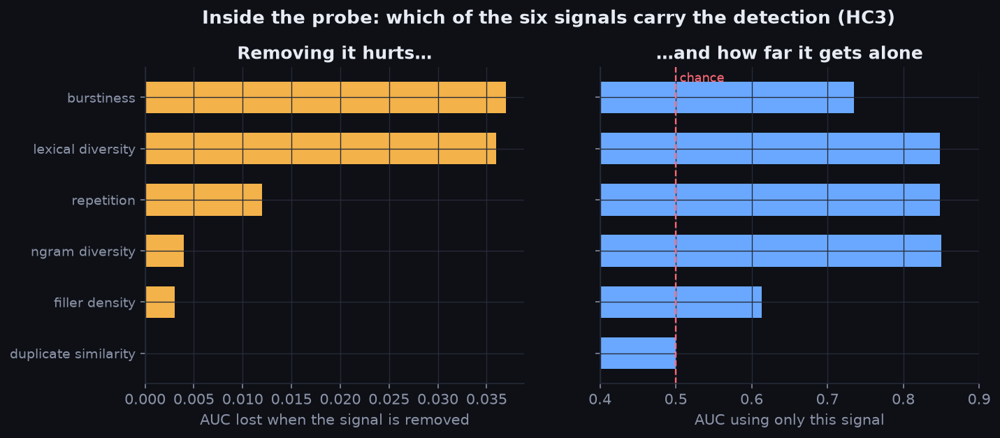
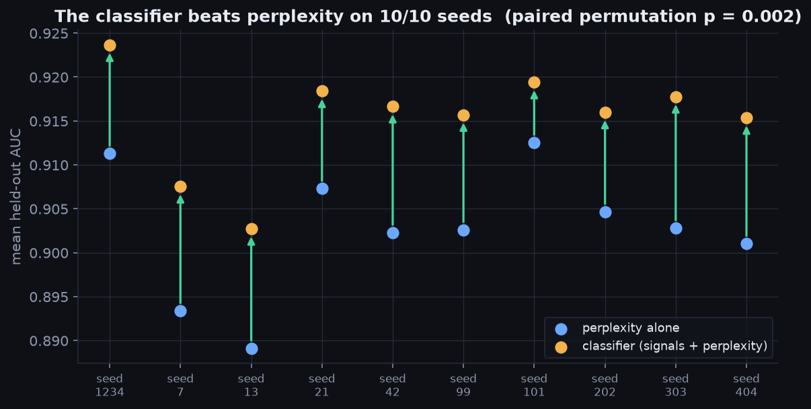
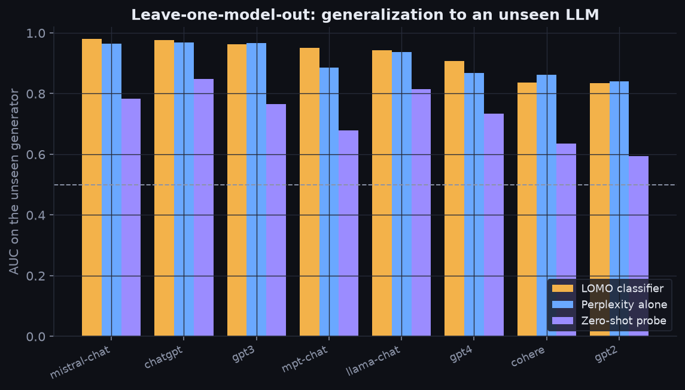
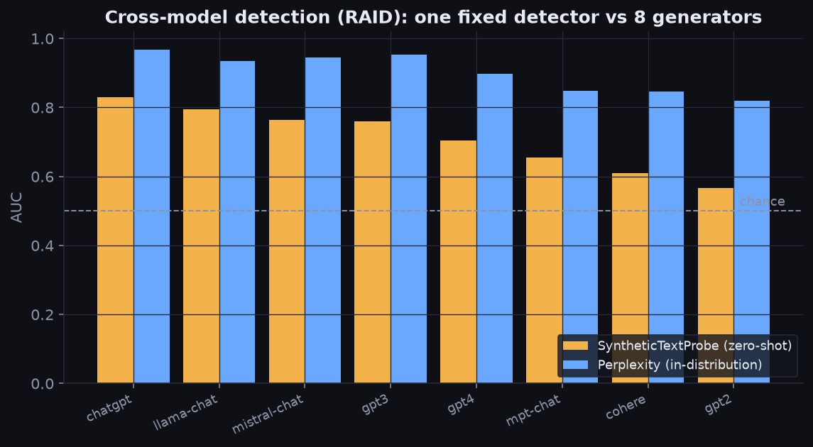
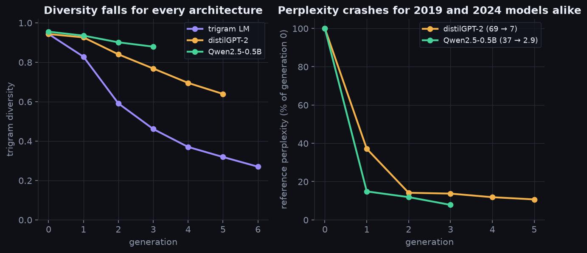
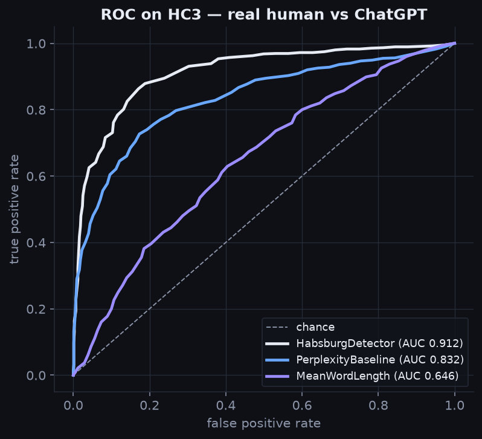
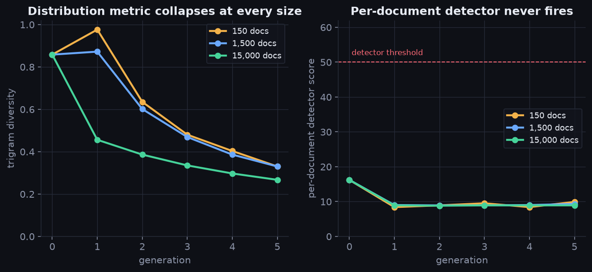

click anywhere or press Esc to close
A reproducible study of synthetic-text detection and model collapse. Six interpretable, dependency-free statistics generalize to unseen language models, yet per-document detection turns out to be a fundamentally different objective from distribution-level collapse monitoring.
A detector can correctly identify synthetic documents while completely failing to detect distributional degeneration.
No background needed. Here is the whole project, from the problem to the finding.
A growing share of the web is now written by language models. Since new models learn from text scraped off that same web, models are increasingly trained on the output of other models — and eventually on their own.
Like photocopying a photocopy, each cycle loses detail. Rare words disappear, phrasing narrows, everything drifts toward the same bland average. Researchers call it model collapse; the internet nicknamed it "Habsburg AI." We reproduced it on three different architectures — vocabulary fell up to 87% in a few generations.
The name is a joke about the Habsburg royal family, whose habit of marrying relatives famously degraded the bloodline. Same idea, but with training data.
If AI text is the contaminant, just point a detector (like GPTZero or GLTR) at every document and filter out what it flags. That is what most people — and some products — assume works. It sounds airtight.
We built a detector good enough to score 0.915 AUC on language models it never saw — then watched it fail. As our test models collapsed (their text quality measurably cratering), the detector's verdicts barely moved: about 91% of collapsed documents were never flagged. Even a much stronger detector had the same blind spot. The reason is structural: a detector judges one document at a time, but collapse lives in the overall distribution — no single document looks broken; the variety across documents is what vanishes.
Simple corpus-level numbers — vocabulary size, n-gram diversity, perplexity under a fixed reference model — tracked collapse cleanly and monotonically in every experiment. That is the paper's message, and it is what our tool TailGuard automates: a health check for training data that fails your CI before a bad dataset reaches a training run.
A language model grounded in this paper's actual results. It streams answers live — and it will tell you when something is outside what the research covers.
Flagging an AI document and warning that a corpus is collapsing sound like the same tool. They are not — and different signals answer them.
| Signal / metric | Flag one AI document | Detect corpus collapse |
|---|---|---|
| Perplexity (fixed LM) | Good | Good |
| Per-document detector score | Good | Poor |
| Vocabulary size | Poor | Excellent |
| Distinct n-gram diversity | Poor | Excellent |
The detector is a deliberately simple instrument — the SyntheticTextProbe — not the contribution. "Habsburg AI" names the phenomenon we study (model collapse), after Shumailov et al. (2023).
Each normalized to 0–1 and combined with a fixed weight into a 0–100 synthetic-likelihood. Three are inverted so a higher contribution always means more synthetic. Pure Python standard library.
Canned filler phrases ("it is important to note…") per ~50 tokens.
Fraction of trigrams that are repeats — looping phrasing.
Type-token ratio. Low diversity → more synthetic.
Distinct-trigram ratio. Low → more synthetic.
Sentence-length variation. Uniform lengths → more synthetic.
Overlap with a corpus of known model outputs — catches recycling.

A faithful JavaScript port of the detector's six signals, running entirely in your browser. Paste text or load a preset.
| Held-out | Classifier | Perplexity | Zero-shot |
|---|---|---|---|
| Mistral-chat | 0.981 | 0.965 | 0.784 |
| ChatGPT | 0.976 | 0.968 | 0.848 |
| GPT-4 | 0.907 | 0.868 | 0.734 |
| Cohere | 0.837 | 0.862 | 0.636 |
| GPT-2 | 0.834 | 0.840 | 0.594 |
| Mean | 0.924 | 0.911 | 0.732 |
Mean 0.915 ± 0.006 (95% CI [0.911, 0.920]) vs perplexity 0.903 ± 0.007 — non-overlapping CIs. Paired permutation test: +0.013, wins 10/10 seeds, p = 0.002.



| Detector (zero-shot) | HC3 | RAID |
|---|---|---|
| SyntheticTextProbe (heuristics) | 0.915 | 0.724 |
| GLTR — GPT-2 log-prob | 0.995 | 0.862 |
| GLTR — GPT-2 top-10 rank | 0.995 | 0.848 |
A white-box likelihood detector clearly wins for detection — but it is also per-document, so it is equally blind to collapse. The gap isn't an artifact of a weak detector.
We retrain a model on the text it just generated, generation after generation, and instrument it with the same detector and diversity metrics.
Scaled the corpus to 150 / 1,500 / 15,000 docs on two datasets. Larger corpora collapse more slowly (vocab loss −96% → −32%), but in all six runs the distribution metrics still fall and the detector never flags it — contamination ≤0.1% in all six runs.
Not just 2019-era distilGPT-2: Qwen2.5-0.5B (2024) LoRA-fine-tuned recursively — reference perplexity 37 → 2.9, vocab −87% — yet the detector stays flat (17.6 → 18.4), contamination 2%.

The paper's conclusion, productized: don't run an AI detector per document — monitor the distribution. TailGuard snapshots a corpus's health (vocabulary, n-gram diversity, burstiness, duplication, score distribution), compares snapshots, and fails CI when a corpus is degrading. Zero dependencies, MIT-licensed — get the code on GitHub.
# snapshot a healthy corpus python3 tailguard.py scan data/ -o baseline.json # tripwire before every training run (CI) python3 tailguard.py compare baseline.json data/ # exit 0 = healthy · 1 = warnings · 2 = critical # human-readable report python3 tailguard.py compare baseline.json data/ --html report.html
We contaminated a 1,500-doc human corpus with 60% collapsed + AI text. The per-document synthetic score barely moved (16.2 → 15.5 — the paper's exact blind spot). TailGuard's distribution metrics fired: trigram diversity −11.1%, bigram −9.4% → WARNING, exit 1.
A 7-feature classifier reaches 0.915 on generators it never trained on, beating heuristics and perplexity alone.
One fixed detector ranges 0.57–0.83: strong on chat models, near chance on base GPT-2.
Predicted it would raise the floor; it didn't (0.895 vs 0.924). Reported with its caveat, not spun away.
Collapse is real (perplexity 69→7) but per-document detection barely moves — a different problem entirely.


An 8-page write-up: detector, baselines, LOMO classifier, ablation, GLTR comparison, scaling, collapse, and a candid threats-to-validity section.
Download PAPER.pdf